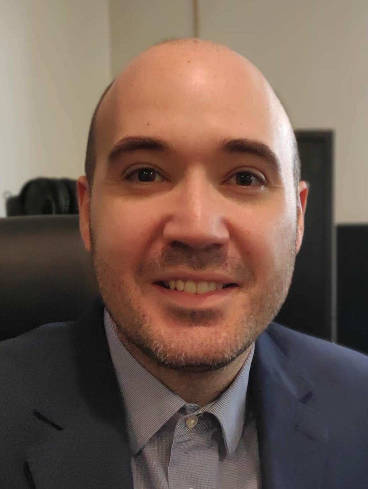
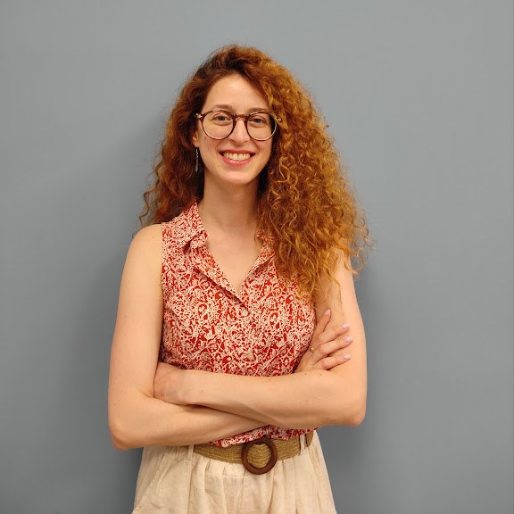
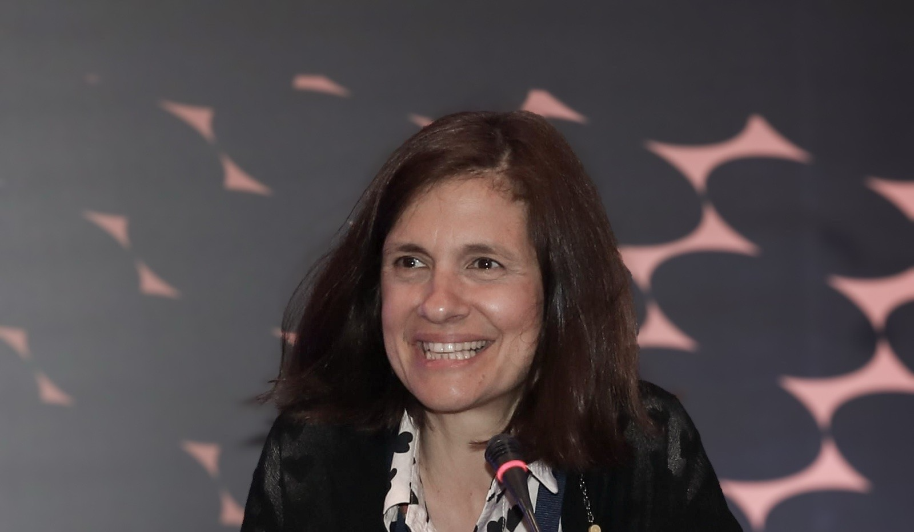
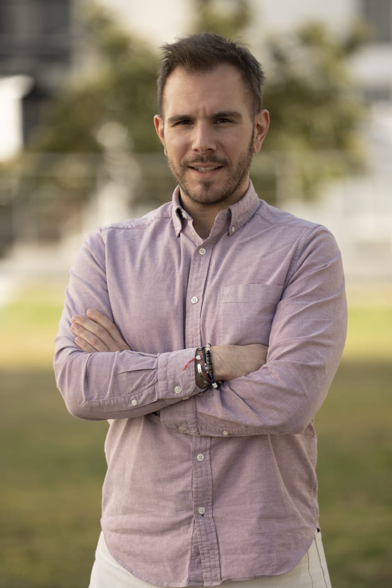
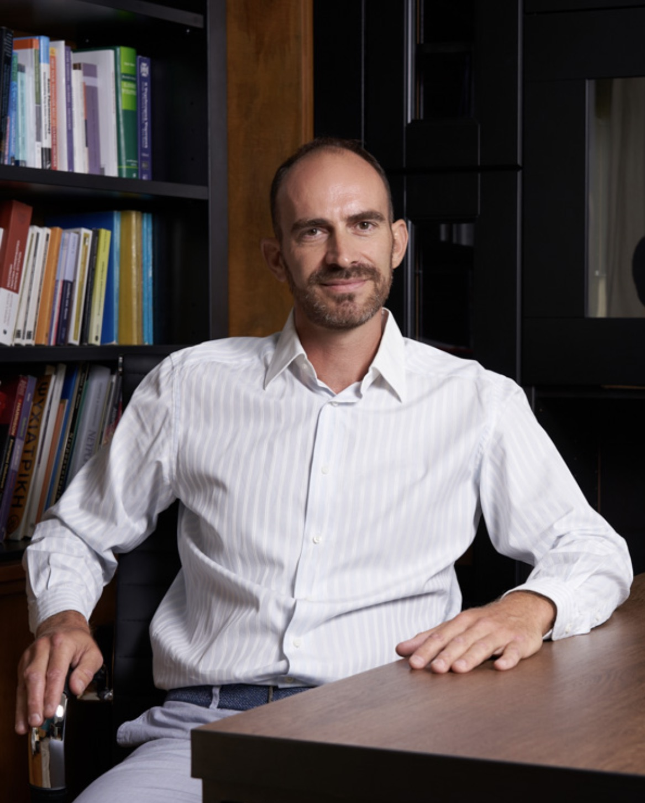
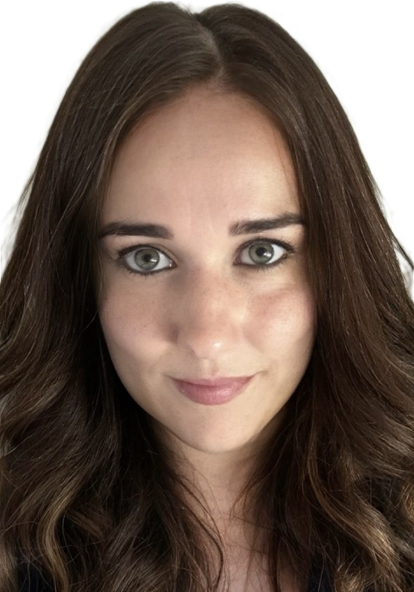

ENDietS Fall School Day
A full day of interactive networking, hard skills workshops, artificial intelligence in nutrition and international career opportunities.
10:00–18:00Optional Gather to Nourish Dinner at 19:30.
Fall School Programme
Four days of learning, professional development and meaningful connections in Thessaloniki.
How the programme works
The 2nd ENDietS Gather to Nourish School takes place alongside ICONSD2026, offering participants the opportunity to combine an international scientific conference with a student-centred educational experience.
Thursday is dedicated to the main ENDietS Fall School programme, featuring interactive activities, practical workshops and career-focused discussions.
Additional ENDietS sessions take place on Friday and Saturday, while participants can also explore the scientific programme of ICONSD2026.
All times are local to Thessaloniki. The programme may be subject to minor changes.
At a glance
Discover the main activities planned for each day of the Fall School.
A full day of interactive networking, hard skills workshops, artificial intelligence in nutrition and international career opportunities.
10:00–18:00Optional Gather to Nourish Dinner at 19:30.
An interactive workshop exploring work-related burnout, compassion fatigue and psychological wellbeing in dietetic practice.
15:00–17:00Explore international career opportunities across clinical nutrition, research, industry and European institutions.
09:00–10:00Continue exploring the scientific programme of ICONSD2026 and connect with fellow participants.
Schedule
Explore the ENDietS activities taking place throughout the four days. All times are local to Thessaloniki.
Sessions & speakers
Discover the experts and professionals joining the ENDietS Fall School and learn more about their sessions.

Thursday · 14:30–16:30
Dr. Ioannis (Ion) Pagkalos
Associate Professor, International Hellenic University
Dr. Ioannis (Ion) Pagkalos is a Computer Scientist and Associate Professor at the Department of Nutritional Sciences and Dietetics of the International Hellenic University, where he teaches Nutrition Informatics, e-Health and e-Government. He is also the founder and director of the Nutrition Information Systems Laboratory (NISLAB).
With over 20 years of research experience, he has contributed to the design, implementation and management of digital solutions across more than 35 EU- and state-funded research projects, as well as large-scale cross-border pilots. His interests include Nutrition Information Systems, digital health, e-Government, data science and ICT-assisted assessment of energy intake and physical activity.
How are artificial intelligence and digital technologies shaping the future of nutrition and dietetics?
This session introduces participants to artificial intelligence and Nutrition Information Systems, exploring how digital technologies can contribute to research, professional practice and innovation.

Thursday · 16:45–17:45
Despoina Tsoumana
Despoina Tsoumana studied Nutrition and Dietetics at the International Hellenic University and completed a Master's degree specialising in Public Health Nutrition at Aristotle University of Thessaloniki.
Following her studies, she moved to Barcelona for an Erasmus+ traineeship at Blanquerna – Ramon Llull University. Her experience in private dietetic practice and public health nutrition research has shaped her interest in developing creative and interactive approaches to nutrition education. Her passion for dance and theatre also influences her perspective on communication, active learning and human connection.
What paths open up after graduation, and how can international mobility shape a career in public health nutrition?
Despoina will share her experiences with Erasmus+ projects and international mobility, highlighting opportunities for personal and professional growth and the role of active learning in nutrition education.
Friday · 20 November · 15:00–17:00
Burnout, compassion fatigue and psychological wellbeing are important topics in dietetic practice. This interactive workshop brings together perspectives from nutrition science and health psychology to explore the professional challenges dietitians face.
Through expert insights and moderated discussion, participants will reflect on work-related burnout, compassion fatigue and approaches to supporting psychological wellbeing in professional practice.
The workshop includes a coffee break.

Workshop Speaker
Understanding Work-Related Burnout Among Dietitians: Prevalence, Causes, and Perspectives
Prof. Mary Yannakoulia is Professor of Nutrition and Eating Behaviour at Harokopio University in Athens, Greece. Her research focuses on eating behaviour, adherence to dietary and lifestyle interventions, and the relationship between diet, ageing and cognitive decline.
She has co-authored more than 340 scientific publications and received a Fulbright research award in 2009 and the Honorary European Dietetic Fellowship Award in 2023. From 2013 to 2021, she represented Greece in the European Commission's High-Level Group for Nutrition and Physical Activity.
Her extensive experience in nutrition research and dietetics education provides valuable perspectives on professional wellbeing and the challenges faced by dietetic practitioners.

Workshop Speaker
The Cost of Caring: Understanding Burnout, Managing Compassion Fatigue, and Promoting Psychological Wellbeing in Dietetic Practice
Dr. Antonios Bozas is a Health Psychologist and Postdoctoral Researcher at the Institute of Applied Biosciences of the Centre for Research and Technology Hellas (CERTH), Greece.
He holds a PhD in Health Sciences from Aristotle University of Thessaloniki and postgraduate qualifications in Pain Management and Healthcare Management, specialising in Public Health. His research explores health psychology, behavioural health, psychological flexibility, dietary adherence and wellbeing.
His professional experience includes national and European research projects on psychosocial interventions, health literacy, patient empowerment and personalised healthcare. He is committed to promoting equitable, evidence-informed healthcare through research, education and interdisciplinary collaboration.

Workshop Moderator
Psychiatrist & Psychotherapist
Dr. Dimitrios Z. Efthymiou is a Psychiatrist and Psychotherapist, certified in Cognitive Behavioural Therapy by the European Association for Behavioural and Cognitive Therapies (EABCT).
He has extensive training in several psychotherapeutic approaches, including Schema Therapy, Psychodynamic Psychotherapy, Cognitive Analytic Therapy and Group Psychotherapy.
He graduated from the Medical School of Aristotle University of Thessaloniki and holds postgraduate qualifications in business and healthcare administration. His research interests include the relationship between nutrition and mental and physical health, as well as early intervention in first-episode psychosis.
Alongside his clinical work, he has held senior healthcare administration positions in Greece and Cyprus and contributed to healthcare policy initiatives. His expertise combines psychiatry, psychotherapy, healthcare management and public health.

Saturday · 09:00–10:00
Dr. Krizia Ferrini, RD, MSc, PhD
Clinical Nutrition Consultant (Italy–Switzerland–Spain)
Dr. Krizia Ferrini is an international nutrition professional with extensive experience across clinical practice, scientific research, industry, medical technology and European institutions.
She holds a PhD in Psychology, Health and Statistical Science from the University of Pavia and is qualified as both a Registered Dietitian and a Biologist in Human Nutrition.
Her professional experience spans clinical nutrition, oncology, research and healthcare innovation, providing her with a multidisciplinary perspective on international career opportunities in nutrition. She is passionate about bridging scientific evidence, personalised nutrition and public health to improve healthcare outcomes.
This session explores the diverse career opportunities available to dietitians across clinical nutrition, research, industry and European institutions.
Drawing on her international professional experience, Dr. Ferrini will share insights into navigating different professional environments and building a career across disciplines and borders.
Thursday evening · Optional social activity
Join us for the Gather to Nourish Dinner! Bring your friends, meet fellow nutrition and dietetics students from across Europe, and enjoy an evening of good food, laughter and meaningful connections. Whether you're coming with friends or on your own, it's a wonderful opportunity to make new ones!
Friends are welcome to join! Please make sure everyone completes the RSVP form by 18 November 2026 to secure their place.
Thursday, 19 November 2026
19:30 · Thessaloniki local time
Kivotos ton Gefseon
Patriarchou Ioakim 26
Thessaloniki 546 35, Greece
€25 per person
The dinner is optional and is not included in the Fall School registration fee. A separate RSVP is required.
A shared fixed menu, served per four people, consisting of bread, salad, three appetizers, a mixed meat platter, one soft drink and dessert.
Only one fixed menu is available.
Payment can be made in advance via Revolut or in cash on the day of the dinner. Cash payments must be made in euros.
Please indicate any food allergies or intolerances in the RSVP form. Dietary accommodations are subject to confirmation by the restaurant.
18 November 2026
To secure your place, please complete the RSVP form by the deadline.
This dinner is organised by the ENDietS Team, independently of the congress organisation agency.
For any questions, please contact endiets@efad.org .
Programme updates
The programme may be subject to minor adjustments. Any remaining session details will be shared as they are confirmed.
Join us in Thessaloniki